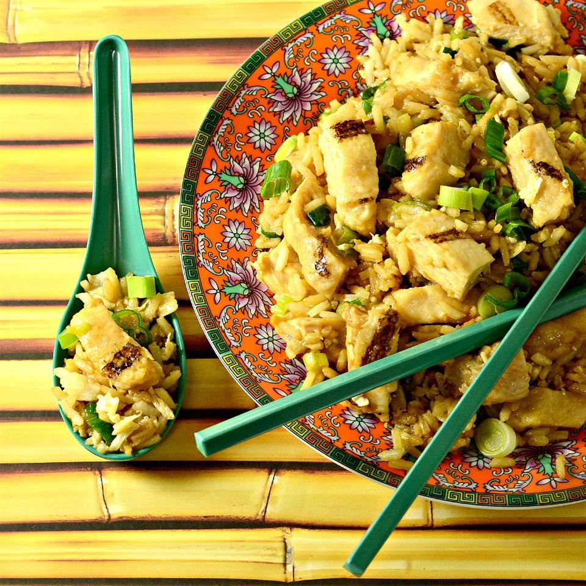

Fried Rice

Description
A quick and easy fried rice recipe. The recipe can be customized to different kinds of ingredients.
Ingredients
- 4.5 cups of cooked and chilled white rice
- Salt
- Vegetable oil
- 2 eggs
- Shrimp (or protein of your choice)
- 1/2 cup shitake mushrooms, chopped
- 1/2 cup frozen peas(or vegatable of your choice)
- 2 cloves garlic, crushed
- 3 tablespoons of oyster sauce
- 3 tablespoon of soy sauce
- Sesame seeds
- 1 tablespoon of butter
Steps
- Rinse your rice in water before you start boiling it. Add a little salt and boil it for 25 to 30 minutes
- Fried rice is made with left over rice, so let it cool for 30 minutes at room temperature then cool it in the fridge for 4 hours.
- Preheat your pan and add a little vegtable oil to it. Then cook your eggs in the pan and scramble them. The eggs will cook quickly, make sure you take the eggs out just before they become curds.
- Set your cooked eggs aside in a bowl and clean your pan. Preheat the pan and add a little oil to it, then add your shrimp (or protein of choice). Saltay (move them around the pan and flip them) until they lightly brown.
- Set your shrimp asside with your eggs and clean your pan one more time. Add more oil to the pan and add the mushrooms. Cook the mushroom until they lightly brown.
- Add your peas(or vegtabale of your choice) to the pan and saltay until there warm.
- Add your garlic to the pan and saltay for about 30 seconds.
- Add your rice to the pan along with the oyster sauce and soy sauce. Stir and cook them together for about 3 to 5 minutes.
- Reduce the heat to low and add a little more vegtable oil, the sesame seeds and butter.
- Stir everything together a few more times.
- Congratulations! Enjoy your fried rice.